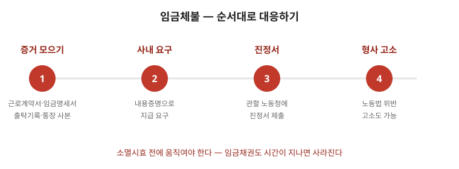

임금은 노동의 대가이자 생계의 기반입니다. 체불이 생겼을 때 대응의 핵심은 기록을 먼저 만들고, 절차를 순서대로 밟는 것입니다. 감정적 항의보다 증거 확보가 회수 가능성을 높입니다. 이 글은 체불 확인부터 진정·지연이자·대지급금까지 실행 순서대로 정리한 안내입니다. 금액 계산과 시효 판단은 사안마다 다르므로 마지막 점검표까지 읽고 진정 안내·전문가 상담으로 확인하세요.

한눈에 보는 표 — 대응 순서
| 순서 | 할 일 | 남길 기록 |
|---|---|---|
| 1 | 미지급 항목 구분 | 계약서·명세서·입금내역·출퇴근 기록 |
| 2 | 회사에 서면으로 지급 요구 | 내용증명·메일 발송 내역 |
| 3 | 고용노동청 진정 | 진정서·조사 결과서 |
| 4 | 지연이자·대지급금 검토 | 계산서·신청 서류 |
1. 먼저 확인할 것 — 항목을 구분하라
- 근로계약서·급여명세서·통장 입금내역·출퇴근 기록을 모으세요. 카카오톡·문자로 받은 지시와 약속도 증거가 됩니다. 구두 약속은 날짜·상대방과 함께 메모해 두세요.
- 미지급 항목을 구분하세요. 기본급·연장수당·주휴수당·퇴직금·연차수당은 각각 계산 근거가 다릅니다. 뭉뚱그려 “월급 밀렸다”가 아니라 항목별로 금액을 적어야 조사도 빨라집니다.
- 청구할 수 있는 기간을 확인하세요. 임금채권은 소멸시효가 짧아 시간이 지나면 회수 자체가 어려워집니다. 관련 글 소멸시효를 함께 보세요.
2. 회사에 서면으로 요구 — 진정 전 한 단계
- 진정 전에 미지급 내역(기간·항목·금액)과 지급 기한을 적어 서면으로 요구하세요. 내용증명 우편이면 발송 기록이 남아 이후 절차에서 유리합니다.
- 회사가 “다음 달에 준다”고 하면 날짜·금액을 문서로 확정하세요. 구두 약속만으로는 시효가 계속 흐릅니다.
- 이 단계의 서류는 진정서·소송의 기초 자료가 됩니다. 관련 글 내용증명 작성법을 참고하세요.
3. 진정과 근로감독
- 사업장 소재지를 관할하는 고용노동청(지방관서)에 진정을 제출하면 근로감독관이 사실관계를 조사합니다. 진정은 대리 제출도 가능하고, 노조가 있으면 조합을 통해 진행하는 편이 기록 관리에 유리합니다.
- 근로기준법상 임금 지급 의무 위반은 형사처벌 대상이지만, 반의사불벌 조항이 적용되어 처리 방식이 사안마다 달라질 수 있습니다. “처벌 의사” 표시에 신중해야 하는 이유입니다.
- 조사 과정에서 사용자가 일부 지급하면 지급 내역을 반드시 영수증·입금증으로 남기세요.
4. 지연이자와 대지급금
- 지급 기일을 넘긴 임금에는 지연이자가 붙습니다. 근로기준법이 정한 이율이 있으므로 청구 시 원금과 함께 적으세요.
- 사업주가 지급 능력이 없거나 도산한 경우 국가가 일정 범위에서 대신 지급하는 제도(대지급금)가 있습니다. 신청 요건과 한도가 정해져 있으니 퇴직 후라도 사업주 인적사항·사업자등록번호를 미리 확보해 두면 절차가 빨라집니다.
- 퇴직금도 임금채권의 하나로 진정·소송 대상이 됩니다. 퇴직 시점의 평균임금 산정 자료를 확보해 두는 것이 중요합니다. 관련 글 퇴직금·급여명세서 읽기를 함께 보세요.
자주 틀리는 3가지
- “사장이 어렵다니까 기다려야 한다” — 기다리는 동안 시효가 흐릅니다. 서면 요구와 진정은 병행할 수 있습니다.
- “명세서가 없으면 못 받는다” — 통장 내역·출퇴근 기록·메신저 지시도 증거가 됩니다.
- “회사가 망하면 끝” — 대지급금 제도로 일정 범위를 국가에서 대신 지급받을 수 있습니다.
현장 체크리스트
- □ 계약서·명세서·통장내역·출퇴근 기록을 모았는가
- □ 항목별(기본급·수당·퇴직금) 미지급액을 적었는가
- □ 서면 지급 요구를 보냈는가
- □ 관할 고용노동청을 확인했는가
- □ 지연이자 계산 근거를 적었는가
자주 묻는 질문
- Q. 퇴사했는데 체불을 청구할 수 있나요? — A. 가능합니다. 퇴직 후라도 진정·소송 대상이 됩니다. 다만 시효가 있으므로 미루지 마세요.
- Q. 증거가 명세서밖에 없습니다. — A. 통장 입금내역, 출퇴근 기록, 업무 지시 메신저를 함께 모으세요. 여러 조각이 모이면 입증력이 커집니다.
- Q. 사장이 “고소 취하하면 준다”고 합니다. — A. 반의사불벌 구조를 악용한 흥정일 수 있습니다. 지급 확인 전 취하는 합의는 전문가 상담 없이 하지 마세요.
- Q. 일부만 받았습니다. — A. 받은 금액의 항목(어느 달·어느 수당인지)을 문서로 확정하고 나머지를 계속 청구하세요.
근거와 원문
이 글은 2026-09-19 기준 일반 안내입니다. 구체적인 금액 산정·소멸시효 판단은 사안마다 다르므로, 노조·공인노무사·변호사 또는 관할 고용노동청에서 확인하세요. 법률 자문이 아닙니다.